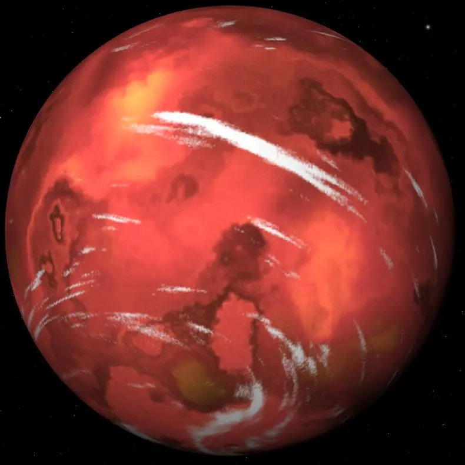

Wolf 1069 b — Exoplaneta

Introdução e História
Wolf 1069 b é um exoplaneta rochoso com massa semelhante à da Terra orbitando uma estrela anã vermelha chamada Wolf 1069, localizada a cerca de 31 anos-luz de distância na constelação de Cygnus.
Ele foi descoberto por meio de medições de velocidade radial com o espectrógrafo CARMENES, com a descoberta anunciada em 2023.
Características Físicas: Massa, Tamanho e Órbita
Wolf 1069 b tem uma massa mínima estimada de cerca de 1,26 vezes a da Terra e um raio estimado de aproximadamente 1,08 vezes o terrestre, sugerindo que ele é um planeta rochoso.
Ele orbita sua estrela em cerca de 15,6 dias terrestres a uma distância de aproximadamente 0,0672 UA, colocando-o dentro da zona habitável do sistema.
Por estar tão perto de uma estrela muito menor e mais fria que o Sol, o planeta pode ter rotação travada por maré, com um lado sempre voltado para a estrela.
Potencial de Habitabilidade
- Zona Habitável: Wolf 1069 b orbita dentro da zona habitável.
- Energia Estelar: Recebe cerca de 65% da energia que a Terra recebe do Sol.
- Atmosfera Desconhecida: Não há observações diretas da atmosfera.
Essas características fazem de Wolf 1069 b um dos exoplanetas mais promissores para estudos de habitabilidade em sistemas próximos.
Curiosidades
Wolf 1069 b é um dos exoplanetas de massa terrestre mais próximos da Terra encontrados na zona habitável.
A estrela hospedeira possui apenas cerca de 17% da massa do Sol.
Todas as imagens do planeta são representações artísticas baseadas em dados indiretos.
Origem do Nome
O nome “Wolf 1069 b” segue a convenção científica de designação de exoplanetas, indicando a estrela hospedeira e a ordem de descoberta no sistema.
Referências
- NASA. Wolf 1069 b — Exoplanet Catalog. Disponível em: https://science.nasa.gov/exoplanet-catalog/wolf-1069-b/ . Acesso em: 27 dez. 2025.
- Wikipedia. Wolf 1069 b. Disponível em: https://en.wikipedia.org/wiki/Wolf_1069_b . Acesso em: 27 dez. 2025.